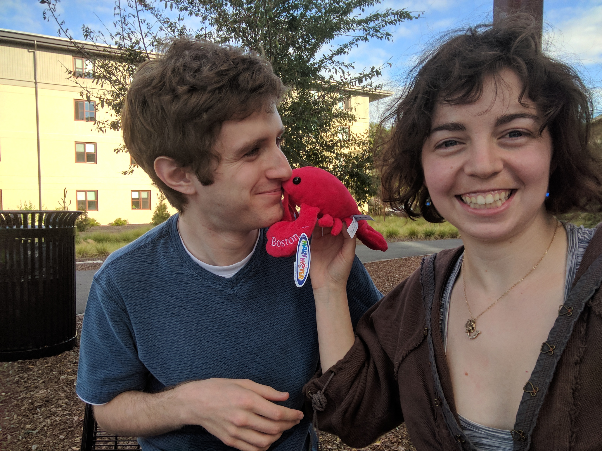

About Us
Get the inside scoop on the bride and groom
Rebecca and Ben are a couple of self-proclaimed nerds who enjoy
board games, doodling, and creativity.
Rebecca manages a team of computer scientists working on developing
algorithms to optimize the use of energy storage. She is passionate
about alternative energy and electric cars. In her spare time,
she can be found writing or running or playing the latest Pokemon game.
She’s discovered any combination of two of those activities is
possible at the same time.

Ben is a nearly-graduated PhD student at Stanford University
who studies computational mechanics, specifically how
cracks can be simulated using finite element methods.
Given his graduate student status, he has no spare time.
Mostly joking. Ben enjoys learning mathematics, playing video games,
and completing puzzles (Rebecca requests he not be given a
crossword on November 23rd in fear that he will become so engrossed
he misses the ceremony).
Together, they love to travel, visit with friends,
compete in games, and try to get each other to like their favorite
television shows, to mild success.
Rebecca and Ben met in 2013 at Stanford when they were both
starting their Masters degrees at TA Orientation. After discovering
they were TAing the same class, Rebecca mistook Ben for the head
TA of her section, whose name was also Ben. They ran into each
other again that evening at Stanford Hillel’s Sukkot celebration.
They became fast friends, enjoying Stanford football, game nights,
and Friday night Shabbats.
It took Rebecca and Ben another two and a half years (and
prompting from their friend Sevy) to officially start dating,
with a few false starts in between. Rebecca had moved to
Spokane for work at the time and Ben was still a budding
graduate student, so initially their relationship involved
several plane rides, Skype conversations, and vastly improving
their skills at pressing the play button of their favorite
television shows in sync.
Rebecca moved back to Stanford a year into their relationship,
and they’ve been living the very extravagant graduate student
housing lifestyle since. All 450 square feet.
Ben proposed to Rebecca on New Year’s Eve, among family and
friends. There are many exciting changes to be navigated in the
upcoming months including their move in September,
preferably into a living space larger than 450 square feet. Although
they don’t know where they’ll be living or what they’ll be doing,
they are definitely getting married on November 23rd in Cleveland.
We hope you can join for the celebration!